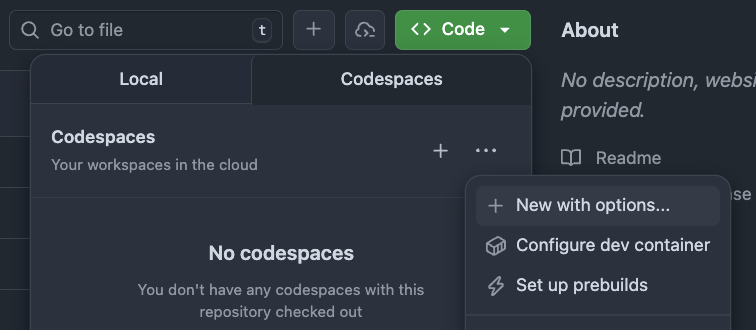
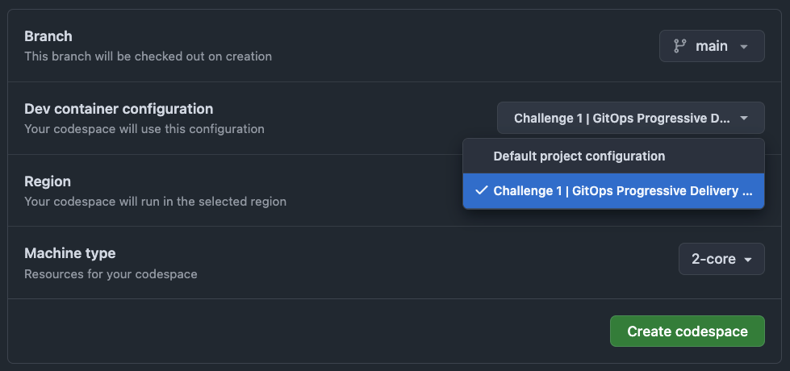
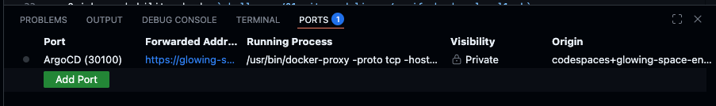

Level 1: The Echo Distortion#
The Echo Server is misbehaving. Both environments seem to be down, and messages are silent. Your mission: investigate the ArgoCD configuration and restore proper multi-environment delivery.
🎯 Objective#
By the end of this level, you should:
- See two distinct Applications in the Argo CD dashboard (one per environment)
- Ensure each Application deploys to its own isolated namespace
- Make the system resilient so changes from outside Git cannot break it
- Confirm that updates flow automatically without leaving stale resources behind
🧠 What You’ll Learn#
- How Argo CD ApplicationSets work
- How to reason about templating and sync policies
- How drift detection and self-healing operate in GitOps workflows
✅ How to Play#
-
Fork the Repository
- Click the “Fork” button in the top-right corner of the GitHub repo or use this link: Fork the repo
-
Start a Codespace
- From your fork, click the green Code button → Codespaces hamburger menu → New with options.

- Select the Challenge 1 configuration.

⚠️ Important: The challenge will not work if you choose another configuration (or the default).
- From your fork, click the green Code button → Codespaces hamburger menu → New with options.
-
Wait for Infrastructure to Deploy
- Your Codespace will automatically provision a Kubernetes cluster, Argo CD, and the sample app. This usually takes around 5 minutes.
- To check the progress press
Cmd + Shift + P(orCtrl + Shift + Pon Windows/Linux) and search forView Creation Log
-
Access the Argo CD Dashboard
- Open the Ports tab in the bottom panel to find the Argo CD row (port
30100) and click on the forwarded address.
- Log in using:
Username: readonly Password: a-super-secure-password
- Open the Ports tab in the bottom panel to find the Argo CD row (port
-
Fix the Configuration
- All errors are located in this ApplicationSet:
challenges/01-gitops-delivery/manifests/appset.yaml - Learn more about ApplicationSets:
https://argo-cd.readthedocs.io/en/stable/operator-manual/applicationset/ - After making changes, apply them:
(Run from the repo root)
kubectl apply -n argocd -f challenges/01-gitops-delivery/manifests/appset.yaml
- All errors are located in this ApplicationSet:
-
Run the Smoke Test
- Once you think the challenge is solved, run the provided smoke test script:
(Run from the repo root)
./challenges/01-gitops-delivery/tests/smoke-test.sh - If the test passes, your solution is very likely correct for Level 1.
- Once you think the challenge is solved, run the provided smoke test script:
-
Submit Your Completion
- Push your changes to
mainto trigger the full verification workflow.🚧 TODO will probably be a manual trigger where the user can select the level or smth like that
- This workflow performs deeper checks that the smoke test cannot do (without revealing solutions).
- If the workflow succeeds, post a screenshot of the result in the challenge thread on the Open Ecosystem to claim completion.
- Push your changes to
Not sure which tools are available? Check out your Toolbox for useful utilities.